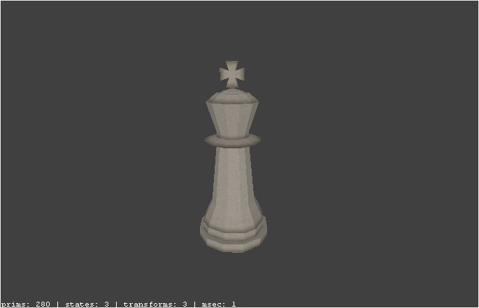
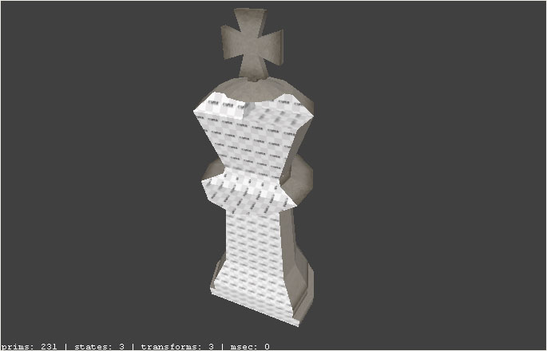
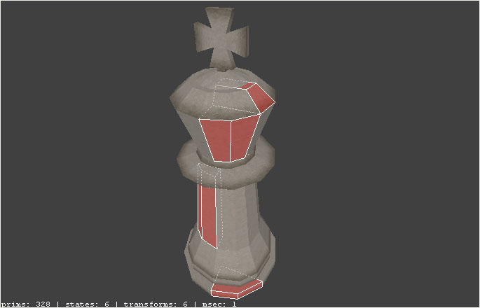
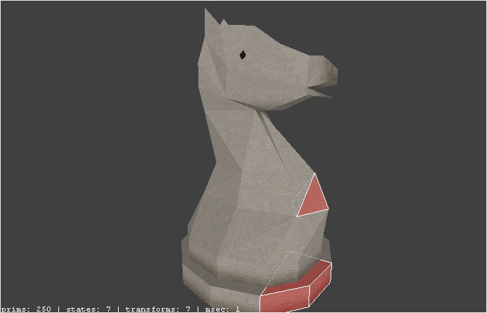
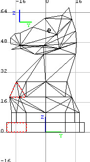
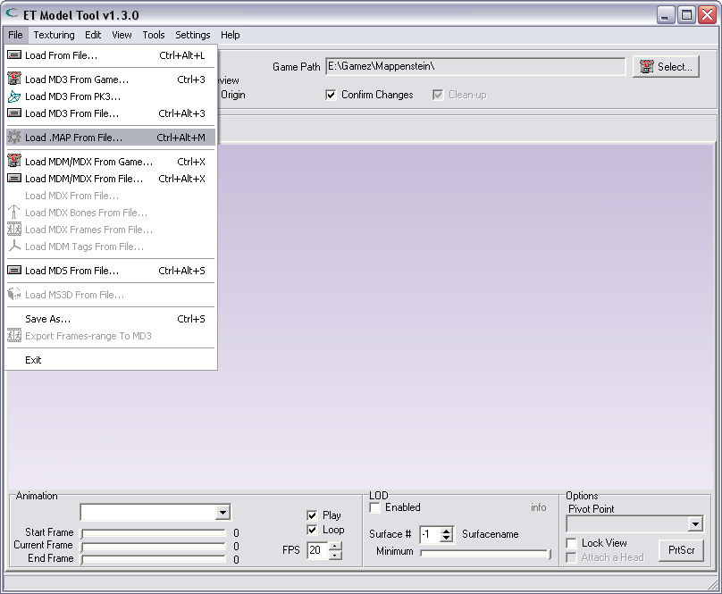
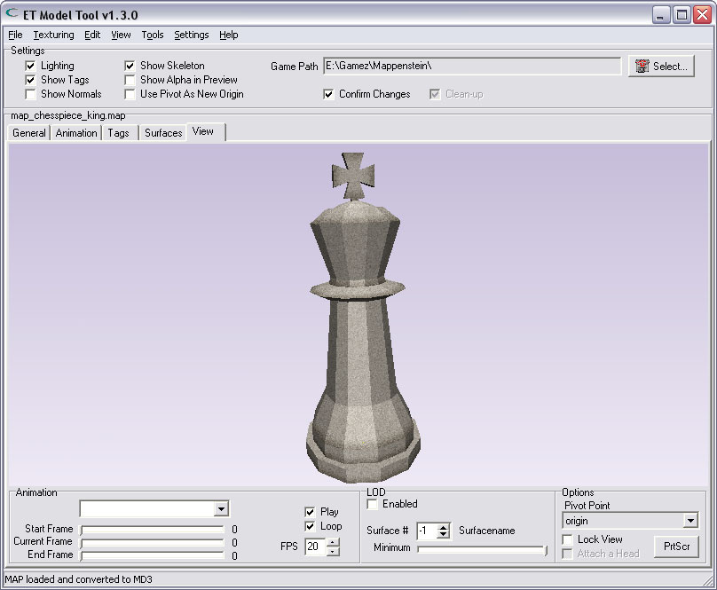
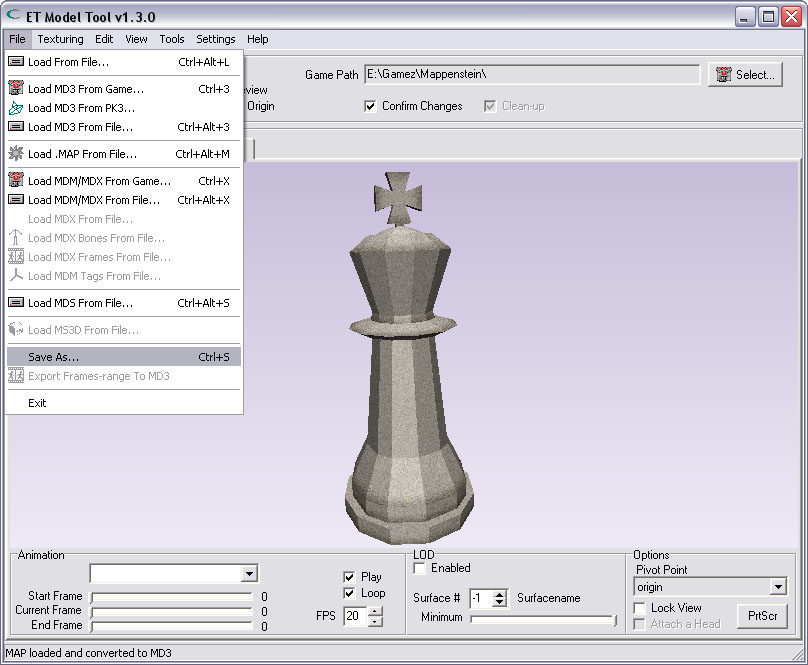

| Converting .MAP To .MD3 | |||
| To convert a model that was made in Radiant from MAP to MD3, build just the model from normal worldspawn-brushes, do not add entities (they will be ignored by the tool). Here i have made a model of a king.. You see there is no hull in my "map". | |||
|  | |||
| Create the model around the origin in Radiant | |||
| Create Your model around the origin in Radiant. The origin is at coordinates (0,0,0). Your model will later rotate around this origin. So if You create Your model at say (100,0,0), it will later rotate around the origin in a circle that is 200 units wide. This is probably not what You want.. | |||
| |||
| Use common/caulk on the faces You don't want to see in the end-model | |||
| Brushfaces that have a 'common/'-shader on a side, will not produce triangles in Your final model. So it is allowed to use the common-shaders on any side of a brush. Just like in a normal map, use the common/caulk shader on every face that nobody can see. If You do not use a common-shader on invisible faces, You will sooner hit the limit on max. vertices. | |||
|  | |||
| The use of brushes | |||
| Use quad- and/or triangle-shaped brushes only, do not use brushes with sides that have more than 4 vertices. If You do use brushes that have more than 4 vertices in a face, You will get a warning, and the model will not be converted.. Here i have selected some brushes of my model. This king is completely made from quad-shaped brushes. | |||
|  | |||
| Here is an example of the model of a knight. This model is made from a mix of quad- & triangle-shaped brushes. | |||
|  | |||
| In Radiant 2D-View You can easily see that the knight is made up from mainly triangle-shaped brushes. | |||
|  | |||
| Converting the Radiant-model to MD3 | |||
| Once You made a model in Radiant, and want to convert it to an MD3, all You have to do is loading the "map-model" in the ET-Model-Tool.. | |||
|  | |||
| Converted while loaded | |||
| Here is the map-model, already converted to MD3. The converting is done immediately. If the model is too big for converting, You will get an error-message and no model is shown in the tool.. | |||
|  | |||
| Saving the MD3 | |||
| If the Radiant-model has loaded, and has been converted, You can save it as an MD3. All You have to do is select the "Save As..." choice from the menu. Note: After loading a .map-file, You can only save it as an MD3, not as any other type of model.. | |||
|  | |||
| Restrictions | |||
| This version of the ET-Model-Tool can only use: This is a restriction inherited from the MD3-format. MD3 simply cannot store vertices with greater coordinates.. | |||